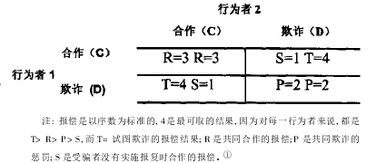

收录于合集
简
叶江
上海国际问题研究院全球治理研究所执行所长
内容提要
“安全困境” 概念源自于霍布斯悲观的“自然状态”理念, 自其运用于国际政治研究以来， 不论防御性现实主义还是新制度自由主义，乃至近年来发展迅速的进攻性现实主义都承认它的真实性。但是，新自由制度主义认为可以通过“囚徒困境”博弈来解决“安全困境”， 防御性现实主义认为能部分地运用“囚徒困境” 博弈来解决“安全困境”，而进攻性现实主义则认为不能用“囚徒困境”博弈来解决“安全困境”。进攻性现实主义强调在安全困境中国家不可能通过制度和合作，而只能通过主动进攻和扩张权力，乃至通过建立区域霸权来争取本国的安全。但进攻性现实主义却反对布什政府的“先发制人战略”，因为该战略以建立世界帝国为目的，从而模糊了国家的安全目标，以致不利于美国在安全困境中谋求真正的安全。
关键词
美国外交；先发制人战略；进攻性现实主义；
安全困境；囚徒困境
近年来，在美国国际关系学界有关进攻性现实主义与防御性现实主义的学术争论中，“安全困境”(security dilemma) 概念与“囚徒困境”(prisoner’s dilemma)博弈论被不时地提及, 我国国际关系学术界也因此对之产生相当的兴趣。本文拟就“安全困境”，“囚徒困境”与进攻性现实主义，防御性现实主义，以及新自由制度主义的关系等问题进行阐释，进而对目前美国的“先发制人战略”与进攻性现实主义在安全观上的差异进行分析。
“安全困境”概念与进攻性现实主义理论 ****
早在20世纪50年代初，美国学者约翰·赫茨(John H. Herz)首先提出了“安全困境”概念。赫茨先是在1950年发表的《自由主义者的国际主义与安全困境》一文中首次提出“安全困境”概念，随后又在1959年出版的《原子时代的国际政治》一书中更为系统地阐述了“安全困境”对国际政治发展演变的影响。赫茨认为：“‘安全困境’或‘权力与安全困境’是一种社会状态，在这样的状态中，当权力单元（比如在国际关系中的国家或民族国家）比肩共存时会发现不存在凌驾于它们之上、能规范其行为和保护其免受攻击的权威。在这样的条件下，从相互怀疑和相互恐惧而来的不安全感迫使这些单元为寻找更多的安全而进行权力竞争，由于完全的安全始终无法最终求得，这样的竞争只能导致自我失败。”赫茨还指出，他所提出的“安全困境”，与英国历史学家和权力政治学者赫伯特·巴特菲尔德(Herbert Butterfield)几乎在同时提出的"霍布斯恐惧困境"(Predicament of Hobbesian fear)具有异曲同工之妙。由此可见，“安全困境"概念的理论渊源实际上是霍布斯哲学中充满悲观色彩的”自然状态理念。霍布斯认为，人类在“自然状态”下，由于受自我保全或自我安全冲动的主使，人人都欲保持个人的自由，但是同时又都欲得到支配别人的权力，于是就发生了一切人对一切人的战争。为了避免这种每个人都会杀每个人的困境，人类结合成若干个服从于中央权力的社会，即国家或“利维坦”这一凡间的神来维持秩序。然而，由人类建立起来的国家之间则依然因为没有更高的权威而继续处于"自然状态“之中。虽然，根据小约瑟夫·奈(JosephS. Nye，Jr.)的研究，霍布斯认为国际间的“自然状态”，不会经常导致那种与个人间的“自然状态”相伴随的苦难，但是，即便如此，根据霍布斯的“自然状态论”，国际间的无政府状态依然会促使国家之间的互不信任，而其必然的逻辑结果就是“安全困境”，即某一国家增强自我安全的行为会不自觉地导致降低他国安全，从而使他国为了自身的安全而竭力增加自己的实力，以至卷入安全竞争的恶性循环之中。自赫茨提出“安全困境”，概念之后，美国国际政治学的新现实主义(neo- realism)或防御性新现实主义(defensive neo-realism)理论迅速将它作为自己的理论基础之一。肯尼斯·沃尔兹(Kenneth N. Waltz)指出：“自希腊的修昔底德和印度的考蒂利亚时起，武力的使用以及控制武力的可能性一直是国际政治研究着重研究对象。约翰·赫茨新创了‘安全困境’一词以描述这种状态，在此状态中，各国都无法摸透彼此的意图，为了安全，各国便将自己武装起来，而在这样做时，恶性循环便形成了。各国出于安全考虑将自己武装起来后，更感不安全，需要购买更多的武器，因为保护任何一国安全的手段是对其他国家的威胁，而后者又转而武装起来作为对前者的反应。”沃尔兹进一步认为，各国实际上无法摆脱这一困境，但是多少还能易于应付。因为明智的政治家只寻求适当的，能保证国家安全的权力总量。并且“国家均衡权力而不是最大化权力”。国家几乎很少将权力最大化当作自己的目的。
十分有趣的是，美国国际政治理论的新自由主义(neo-liberalism)或新自由制度主义(neo-liberal institutionalism)也同时将源自于新现实主义理论的“安全困境”概念视为自己的理论基础之一。其原因在于与国际政治理论中经典自由主义(classical liberalism)或理想主义(idealism)不同，新自由制度主义承认国际体系的无政府状态，而“安全困境”概念的基础则在于对国际体系无政府状态的强调。堪称新自由制度主义领军人物的美国国际政治学家小约瑟夫·奈认为：“安全困境的产生，同国际政治的基本特征，即无政府状态，或国家之上缺少一个政府，是密不可分的。在无政府状态之下，一个国家追求安全的独立行为可能导致所有的国家更不安全。如果一个国家增强其势力以确保自身的安全不受另外一个国家的侵害，那么第二个国家在看见第一个国家变得更加强大后，可能也会增强自己的实力，以防备第一个国家。这样一来，每一方增强自己的实力，以确保自身安全的独立行为，都会使得双方更不安全。”很明显，在对“安全困境”概念的定义及理解上，新自由主义与新现实主义之间几乎没有任何差别。但是，新自由主义特别强调“国家可以通过合作，来避免出现这样的安全困境，也就是说，它们可以达成一个共识，即双方都不增强国防力量，这对大家都有好处。而恰恰在这后一点上，新自由主义与新现实主义产生了分歧，其中尤其是与新现实主义中的进攻性新现实主义(offensive neo-liberalism)分歧犹大。
进攻性新现实主义或称进攻性现实主义(offensive realism)是对以沃尔兹为代表的防御性新现实主义或防御性现实主义的发展乃至挑战。大致而言，进攻性现实主义与防御性现实主义两者的区别主要在下述四个方面：
首先，进攻性现实主义认为国际体系的无政府状态培育出冲突和战争，鼓励进攻与扩张，而防御性现实主义则认为无政府状态的国际体系并不一定导致激烈的冲突和战争；
其次，进攻性现实主义认为在国际体系中，国家的相对权力比绝对权力重要。在国际竞争中，相对获得比绝对获得更重要。而防御性现实主义则认为绝对权力与相对权力，绝对获得与相对获得同等重要，甚至前者比后者更重要；
第三，进攻性现实主义认为在国际体系中安全是稀缺的，而防御性现实主义则认为安全并不那么稀缺；
第四，进攻性现实主义认为在国际体系中理性的国家只有以进攻、扩张来求得稀缺的安全，即解决安全困境的办法除了主动出击，别无他途，而防御性现实主义则坚持认为，对理性的国家而言，恰恰是防御而不是进攻扩张往往能带来安全，因此解决安全困境的办法是多方面的，并且应以防御为主。同时，在一定的条件下，通过合作也可以求得安全。
虽然进攻性现实主义与防御性现实主义在分析国家安全问题上有明显的差异，但在总体上，进攻性现实主义基本接受原来由防御性现实主义者赫茨提出的”安全困境，概念，承认”安全困境，在国际无政府状态中的真实存在。
进攻性现实主义的代表人物，美国国际政治学家约翰·米尔斯海默(John J. Mearsheimer)在其名著《大国政治的悲剧》中明确指出：“‘安全困境’是国际关系文献中最著名的概念之一，它体现了进攻性现实主义的基本逻辑。该困境的实质是，一个国家用来增加自己安全的测度标准常常会减少他国的安全。可见，一个国家在不威胁其他国家的安全情况下增加自己的生存机会是困难的。”很明显，在很大程度上，进攻性现实主义的理论基础之一是“安全困境”，“因为在‘无政府状态’下，一个国家的最佳生存之道是利用其他国家，牺牲他国之利，为自己获取权力。最好的防御就是一种有效的进攻。由于这一信息被普遍认同，因此，无休止的安全竞争连绵不断。”
其实，无论防御性现实主义还是进攻性现实主义之所以都承认“安全困境”概念对理解现实国际政治的重要性，是因为两者同为西方国际政治理论的现实主义学派，都比较悲观地看待现实世界的发展。国际政治现实主义理论对现实世界的认识基础在于对国际体系的下述假设：(1)国际体系始终处于无政府状态之中；(2)国际体系中的主要行为者——国家(特别是大国)均拥有进攻性的军事力量，并能利用自己的军事能力打击甚至摧毁别国；(3)任何国家都始终不能确定他国的行为意图，特别是不能确定他国是否会首先使用武力侵犯自己；(4)所有国家的最基本动机是生存，即确保自己的安全和主权；(5)国家在无政府国际体系中理性地行动以确保生存与安全。
显而易见，现实主义的上述假设承袭了霍布斯的悲观主义“自然状态”论，其逻辑结论就是：只要国家处于无政府的国际体系之中，就必然陷入“安全困境”或“霍布斯恐惧困境”，而不论防御性现实主义还是进攻性现实主义，只要承认现实主义的基本假设自然也就很难否定“安全困境”的真实性和客观性。另一方面，由于新自由制度主义既不否认现实主义提出的国际体系始终处于无政府状态的假设，也不挑战现实主义所坚持的国家是理性的，自我安全利益至上的行为者的观点，因此，尽管新自由制度主义在国家应该如何追求安全的问题上与现实主义存在很大分歧(下文将对此作展开讨论)，却不否认现实主义所提出的“安全困境”，概念，承认“安全困境”在国际体系中的真实存在。值得注意的是，虽然防御性现实主义、进攻性现实主义和新自由制度主义都承认“安全困境”概念的客观性，但三者对如何解决“安全困境”却有着极不相同的看法。其中，进攻性现实主义与其他两者的差异更大。尽管进攻性现实主义认为“安全困境”体现了进攻性现实主义的基本逻辑，但与防御性现实主义和新自由制度主义(其中特别是后者)十分不同的是，进攻性现实主义认为“安全困境”不可能通过国家之间的合作得到解决，甚至“只要国家生活在无政府状态中，就几乎不可能采取任何措施改善安全困境。”具体而言，进攻性现实主义、防御性现实主义与新自由制度主义之间的分歧最主要表现在如何看待“安全困境”与“囚徒困境”博弈的相互关系上。
“囚徒困境”博弈与进攻性现实主义理论 ****
“囚徒困境”是博弈论的重要概念。“囚徒困境”博弈的最简单的形式涉及两个行为者。每一个行为者都被假定为以自我利益为中心的自我效用最大化的自助者即两个被分别关在两个独立的囚室中的嫌疑犯。在每次博弈中每个行为者即囚徒(prisoner)只有一次选择机会， 面对的都是合作(cooperate)或者欺诈(defect)这一简单的选择。由于不允许沟通，因此两人面对同样的困境：或者揭发对方(defect)，使对方被重判，自己获释，但前提是对方不揭发自己；或者保持沉默，那么在对方也保持沉默的情况下，则双方都得到最轻的判决。如果对方招供揭发自己(defect)，则自己被重判，对方获释。根据查尔斯·利普森(Charles Lipson)的研究，“囚徒困境”模式可用下列图表表示：

新自由制度主义认为安全困境是囚徒困境的一种形式。囚徒困境博弈有助于我们清楚地理解国际冲突与合作的一些基本特点，因此囚徒困境博弈可以用来解释安全困境。根据罗伯特·阿克塞尔罗德(Robert Axelrod)和罗伯特·基欧汉(Robert Keohane)的研究，在囚徒困境中，对行为者双方来说，偏好的次序都是：DC>CC>DD>CD，即我方欺诈，对方合作比双方合作处境好；双方合作比双方欺诈处境好；我方合作，对方欺诈处境最差。如果在一次性的博弈中，双方都选择欺诈的可能性极大，但一旦处于多次性的囚徒困境博弈之中(在国际政治经济关系中，博弈往往是多次性的)，那么对未来的关注可以促进合作。如果未来报偿与当前报偿相比可能更多，那么当前欺诈(或背叛)的动力就更少，因为欺诈可能会导致对方的报复。这就意味着预期很重要，一旦双方都预期到如果单方面欺诈而不进行合作会导致对方的报复以至于产生双输。因此在国际政治经济尤其是在经济领域里，一个理性的行为者必须考虑欺诈可能导致的严重后果。在安全领域里，由于存在着限制或者破坏对手有效报复的能力，因而欺诈仍然有可能获益。
新自由制度主义在囚徒困境博弈中引入了制度理念，并且强调制度在安全领域内的重要作用。罗伯特·阿克塞尔罗德和罗伯特·基欧汉指出：预期很重要，国际制度也很重要，因为它体现和影响行为者的预期。因此，制度可以改变政府对当前行为影响未来事务中其他行为者期望程度的看法。国际制度的规则和准则，使各个政府关注先例，以增加他们可以惩罚对手的可能性。由此可见，根据新自由制度主义的看法，在国际安全领域内，安全困境也完全可以通过类似于囚徒困境博弈来解决，但重要的是必须建立国际制度(international institutions)，因为制度制造了一种预期，即特定的破坏(欺诈和背叛)不仅仅是单个的个案，而且是一系列相互联系行动中的一个。
防御性现实主义也肯定囚徒困境博弈在安全困境中的作用，只是并不像新自由制度主义那样视安全困境为囚徒困境的一种表现形式；另一方面，防御性现实主义对国际制度的作用也不像新自由制度主义那样强调。防御性现实主义认为，在无政府状态的国际体系中，国家常常满足于维持现状，而国家的行为更多的是受恐惧的驱使而不是为了增加权力。根据国际政治中安全困境的螺旋模式，即一国加强自身的安全必然引起他国的不安和他国防务力量的扩张，从而又促使本国军备的再度扩张，国家保护自身的防务扩张行为往往会导致自我失败(self- defeating)。多数情况下，恰恰是国家之间为安全的交互作用引起国际冲突而不是国家的故意扩张造成紧张局势，因此，正如多次性囚徒困境博弈所产生的结果那样，行为者双方能够通过合作得到双赢，即国家可以通过合作在安全困境中得到相互的安全(mutual security)。当然，防御性现实主义并不像新自由制度主义那样认为安全困境完全可以用囚徒困境来解释。因为作为现实主义理论的一个重要分支，防御性现实主义依然对现实的国际政治体系比较悲观，认为在国际体系中由于权力的作用，侵略性或攻击性的国家始终存在，安全与其他的利益往往还会造成不能协调的分歧。在这样的情况下，防御性现实主义认为国际间的合作十分困难，冲突就不可避免。
在安全困境和囚徒困境博弈相互间的关系问题上，进攻性现实主义则与防御性现实主义的观点截然不同。进攻性现实主义认为，在国际政治中几乎没有什么重要的情形像囚徒困境博弈，即囚徒困境博弈模型不能解释大国间追求安全的情形，因为在无政府国际体系的安全困境中，国家间的相互安全实际上是不存在的。国家或者为了安全扩张实力，或者为了权力进攻他国，而这两者都是与别国的利益不相调和的。因此，米尔斯海默认为，国家追求相对权力的最大化既是因为这样做能带来安全，也是因为能由此而推行由权力所带来的价值观。柯林·格雷则认为军备竞赛反映了利益的冲突，战争不只是因为相互追求安全所至，而是因为如果不是双方至少是因为一方的进攻性所引起。总之在进攻性现实主义者看来，由国际无政府状态导致的安全困境不可能通过囚徒困境博弈来解决。在安全困境中，国家的安全既不能通过建立国际合作机制(新自由主义的办法)，也不能采取防御性的合作(防御性现实主义的办法)来获得。唯一有效的方法是通过单方面的进攻来赢得，因为最好的防御就是一种有效的进攻。
进攻性现实主义还强调，尽管新自由制度主义认为在囚徒困境博弈中能通过制度来限制欺诈，从而使合作卓有成效，但是由于新自由制度主义只注重国际政治中国家追求绝对权力(absolute power)或绝对获得(absolute gain)，忽视国家对相对权力(relative power)或相对获得(relative gain)的重视，因此其说服力十分有限，甚至没有说服力。根据进攻性现实主义的理论，在无政府国际体系中，国家为了自身的安全不仅竭力地追求绝对的权力，而且十分注重自己的相对权力，即相对他国而言自己所获得的权力增加与否。如果一国在安全竞争中虽然能增加自己的权力但是与此同时他国所增加的权力超过了自己，那么即使自己的绝对权力有所增加，但由于相对权力没有增加甚至减少，因此该国就依然处于很不安全的境地。为此，恰恰是相对权力的大小与否决定了一国在国际体系中的安全与否，因而相对权力或相对获得要比绝对权力或绝对获得更重要。由于囚徒困境博弈只强调每个国家所关心的是其对手的战略如何影响自己的(绝对)获得，而不注意一方的获得对另一方的相对影响。换句话说，每一方仅仅注重自己得到的份额，而不注意他国在博弈过程中所得到的份额。因此它不能用来阐释国家间你死我活的安全竞争。
正是因为进攻性现实主义根本否认能通过囚徒困境博弈来处理安全困境问题，所以进攻性现实主义强调在国际体系中，维持现状国家极为少见，因为在完全控制体系之前，国家是不会成为维持现状的国家的。并且国家为了能获得超过对手的优势，它们就不惜撒谎、欺诈甚至动用武力。º不仅如此，由于国家与国家之间不可能通过建立国际机制实施合作，也不能为了某种和平预期而进行双赢博弈，因此，国家特别是大国只有通过建立霸权才能从根本上解决由安全困境所带来的不安全感。这就如米尔斯海默所强调的那样:大国试图获得超出其对手的权力，并希望成为霸主。一旦国家获得了那一尊贵的地位，它就成了一个维持现状的国家。“霸权”是指一个非常强大的国家，该强大的国家能统治体系中所有其他国家，而过去从来没有出现过全球霸主，最近的将来也不会有。因此，从全球层面来看，实际上是不存在防御性现实主义所经常强调的维持现状国家。当然，大国成为地区性霸主的可能性完全存在，因而所谓的维持现状仅在区域层面有实际的意义。即便如此，如果一个地区霸主面对一个可与之匹敌的竞争对手，即使对手不在同一个区域，它也就不再是维持现状的国家。安全竞争而不是囚徒困境博弈将在这两个对手之间展开，而竞争的主要手段就是先发制人的进攻和扩展自身的权力，并且各方都会竭尽全力地削弱乃至消灭地处远方的对手。
由于进攻性现实主义特别强调在无政府国际体系中，国家总是以进攻和建立霸权来寻求安全困境中的安全。9·11恐怖袭击事件后，布什政府逐渐形成预防性干预或先发制人战略等安全理念。但是，在布什政府于2002年9月2向美国国会提交了上任后的第一份国家安全报告，正式宣布实施先发制人战略之后不久，32位著名的美国国际关系学者(其中大部分是现实主义者)在9月26日的《纽约时报》上刊登了一则付费广告，声明反对布什政府的先发制人战略。他们当中包括进攻性现实主义学派的领袖人物——约翰·米尔斯海默。几乎是同时，米尔斯海默还在《国家利益》上发表《人心与头脑》的文章，批评布什政府的先发制人战略。º进攻性现实主义学者缘何对布什政府的先发制人战略持批评态度，以及布什政府的先发制人战略与进攻性现实主义的安全观之间的关系，值得进一步研究。
“先发制人战略”与进攻性现实主义理论
众所周知，先发制人战略是在经过一个时期的酝酿和准备之后，最终于2002年9月在布什政府提交美国国会的《美利坚合众国国家安全战略》(National Security Strategy of the United States of America)报告中正式提出。据此，美国放弃了传统的威慑和遏制战略，转而准备打先发制人的战争。威慑与遏制是过去50余年间美国安全战略的基础，在先发制人战略的指导下，美国安全战略的这一基础被改变。自此，美国时刻准备在恐怖威胁抵达自己边界之前将其摧毁，并在必要时坚决采取单独行动，打先发制人的战争。布什政府认为：在开放的社会中，严格的防御性反恐怖战略无法保证万无一失。当潜在的攻击者不惜自杀时，通过威胁实施报复来遏制恐怖主义者的攻击似乎不可能成功。而潜在拥有原子武器的无赖国家也同样难以遏制。为此，在潜在的威胁尚未准备好攻击之前就予以主动的打击似乎为唯一的安全战略选择。对布什政府而言，美国之所以改变冷战时期所一直坚持的遏制战略而实行先发制人战略，是因为美国在冷战后已经成为世界唯一的超级大国。美国目前的军事力量不仅为世界第一，而且已经超过其他诸强军事力量的总和，美国的军费开支大于排在美国之后的14个国家军费开支的总和，美国的经济力量则大于排在美国之后的日、德、法三国的总和。正是凭借如此强大的军事和经济力量，美国政府决心实行单边主义政策，在世界舞台上不受限制地独断专行，四面出击，先发制人地积极打击国际恐怖集团，主动攻击支持国际恐怖活动并拥有大规模杀伤性武器的无赖国家和可能兴起的霸权国家。
为了使先发制人战略更具说服力，布什政府的《国家安全战略报告》使用了不少类似于进攻性现实主义的话语，如“我们的最好防御就是良好的进攻”“必须在即将出现的威胁完全形成之前采取行动制止之”“面对的威胁越大，不主动采取行动所导致的危险也就越大。”“考虑到无赖国家的目的以及遏止潜在攻击者的困难性，我们不能让我们的敌人先下手”“历史将严厉审判那些见到正在来临的危险而不采取行动的人。在我们已经进入的新世界里，通向安全的唯一道路就是行动等。”而美国政府官员在向媒体介绍这一报告时，也明显地使用了进攻性现实主义的语言，如“我们不允许一个敌对的军事强国的崛起”等。尽管如此，《国家安全战略报告》刚一出台，进攻性现实主义的代表人物米尔斯海默就对其中的主题——先发制人战略提出了强烈的批评。
首先，米尔斯海默认为布什政府的先发制人战略虽然被称之为美国的安全战略，但其目的却不是进攻性现实主义所特别强调的在国际体系的安全困境中维持美国的安全，而是为了在国际体系中建立起美利坚帝国，并以此使美国支配整个世界，同时能根据自己的利益来改变世界。根据进攻性现实主义的理论，任何大国追求权力的中心目的都是为了在充满危险的世界中求得安全。美国也不例外，为了使自身的安全最大化，长久以来美国的决策者们勤勉地工作以保证美国在全球均势中占据有利的位置。但9·11之后美国的安全政策理念发生了变化，这一方面固然是由于恐怖主义成为美国安全的头号威胁，更重要的是布什总统没有设计出清晰的反恐战略，而是在强大的压力下，视9·11恐怖袭击为改变美国安全政策的转折点，引导美国更积极地卷入世界事务并试图建立美利坚帝国。由于这种以建立帝国为导向的先发制人战略改变了进攻性现实主义所强调的在安全困境中维持国家安全是国家首要目标的原则，因此不符合进攻性现实主义的基本理论。尽管布什政府在推销其先发制人战略的《安全战略报告》中大量使用进攻性现实主义的话语，但这仅仅是与进攻性现实主义的某种形似而非神似。其次，米尔斯海默对先发制人战略所强调的只要美国清楚地表达其使用武力的决心并通过先发制人的战争取得一些胜利，其敌手将要么终止敌对行动要么就跟着美国这一强者走(jump on the American bandwagon)的论调持强烈的批评态度。米尔斯海默认为，根据进攻性现实主义的理论逻辑，跟着强者走(bandwagon)即与强权国家结盟而不是反抗强权国家的政策，不是现实世界中的有效选择，因为虽然跟着强者走的国家可以获得较多的绝对权力，但危险的侵略者会取得更多权力。跟着强者走的战略违背了进攻性现实主义的基本原则，即国家为了自身的安全必须最大限度地扩大自己的相对权力，因此它很少被大国采用。米尔斯海默认为，虽然一些弱小而孤立的小国会在国际事务中选择跟着强者走，但在现实世界中，任何大国实际的选择都是在自己所处的区域内建立均势或推卸责任，而作为离岸平衡手的非该区域的霸主国则应该维持均势而不是促使他国跟着自己走。他强调：美国如要解决恐怖主义问题必须重新检讨自己的中东政策。而作为检讨的开端，美国必须首先改变- 双遏制.政策，即改变美国在该地区同时遏制伊拉克和伊朗两国的做法。美国所需要的应该是依赖该地区的国家相互制衡，尤其应该寻求改善同伊朗的关系，并依靠伊朗遏止伊拉克(或者相反，如果必要的话)。从这样的进攻性现实主义的理念出发，米尔斯海默认为美国不应入侵伊拉克，因为这样做不仅不可能出现跟着强者走的局面，如伊朗不可能因为美国占领了伊拉克就跟着美国走，而且还会打破该地区的均势，而这恰恰对美国的反恐和确保自身安全极为不利。
其实，不论是先发制人战略所表现出来的帝国情结，还是该战略寄希望于他国跟着强者美国走，都明显地反映出先发制人战略与进攻性现实主义在安全观上的重大差异。首先，先发制人战略将国家(当然是美国)扩展自身的权力和向外进攻扩张的目的首先定位于建立能统治世界的帝国而不是安全，并且认为基于跟着强者走战略的存在而建立美利坚帝国是完全可能的。与之相反，进攻性现实主义则认为国家(当然也主要指美国)扩展自身的权力和积极进攻的目的不应该是建立帝国而必须是追求安全，即国家在国际体系中争夺霸权首要的目的就是确保自身的安全，并且由于跟着强者走不是国际体系中行为者的正常选择(正常的选择是均势)，因此任何国家都不可能成为世界霸主，通过争霸而建立起世界帝国是不可能的。其次，先发制人战略强调能在无政府的世界体系内建立起美利坚帝国，从根本上否认了安全困境这一进攻性现实主义也认同的、不论是国际政治的新现实主义理论还是新自由主义理论都承认的概念。因为如果通过赢得先发制人的战争可以建立起美利坚帝国，那么国际体系中的安全困境就没有存在的基础。与先发制人战略的帝国理念相反，进攻性现实主义否认大国有建立世界霸权或世界帝国的可能，坚持安全困境是无政府国际体系中的一种常态，任何大国即使是霸主国都只能始终在安全困境的环境中通过追求权力和进攻来求得安全。
基于先发制人战略与进攻性现实主义在安全观上所存在的分歧，米尔斯海默认为布什政府以建立帝国为导向的先发制人战略是不会取得成功的。原因在于：首先，由于民族主义的巨大影响，在今天的世界上建立帝国极其困难，因为民族主义能促使国家和人民猛烈地反抗他国的控制。其次，使用武力来推翻他国政权并且建立亲美国的政权是一项令人生畏的任务，有时推翻一个政权可能相对比较容易，但要建立一个友好而稳定的政权，从而使美军能撤回自己的国家的任务则非常困难。第三，广泛地使用军事力量并不是对付恐怖分子的好办法。由于恐怖分子是以小股力量采取行动并且在面对直接打击时消失在城市和乡村中，因此常规的军事行动难以找准打击目标。第四，绝大多数美国人并不倾向于参与先发制人的战争。比如：在世界贸易中心倒塌后不久，有69%的哈佛大学学生赞成采取军事行动打击肇事者，但是仅有38%愿意自己参与军事行动。而如果军事行动会导致严重伤亡的话，美国军方对先发制人的战争就缺乏热情。
如上所述，布什政府的先发制人战略安全观与进攻性现实主义的安全观大相径庭。虽然在布什政府的《国家安全战略报告》中，在布什政府官员乃至布什总统本人阐释先发制人战略时，我们能读到、听到不少进攻性现实主义的语汇，但这似乎只能说明，布什政府在制订和推销先发制人战略的过程中，一定程度上受到进攻性现实主义的某些比较表层思想的影响。但在深层次领域，布什政府的先发制人战略与进攻性现实主义则有着明显的差异，前者的帝国情结或内涵与后者的“安全第一”理念并不吻合，前者的理论前提也似乎已经远远超出国际政治理论中新现实主义，其中包括进攻性新现实主义的基本原则)))国家追求权力，扩大权力，保持权力和运用权力的首要目的是在无政府国际体系的安全困境中寻求安全。从目前的情况看，布什政府的先发制人战略与进攻性现实主义之间虽然表层相似，但其各自的内在理论逻辑则截然不同，甚至在一定程度上相互抵触的。当然，这并不意味着两者间的关系不会发生改变。美国政府的先发制人战略作为一种外交和军事战略有可能会随着国际政治的现实和国际政治理论的发展而发生改变。先发制人战略能在表层接受并运用进攻性现实主义的话语，那么为了适应形势的需要，它为什么就不能在深层次上接受进攻性现实主义的基本原则?其实，米尔斯海默对布什政府先发制人战略严厉批评的初衷在于提请美国的政治家们注意进攻性现实主义的原则立场，希望他们能真正按进攻性现实主义的理论制订外交和军事战略，从而切实地维持和推进美国的国家利益。至于美国决策者是否会接受米尔斯海默的批评而改弦更张，则尚有待观察。
文章来源： 《美国研究》 ** 2003年第4期**
筛选：汪乐乐 编辑：敖遊